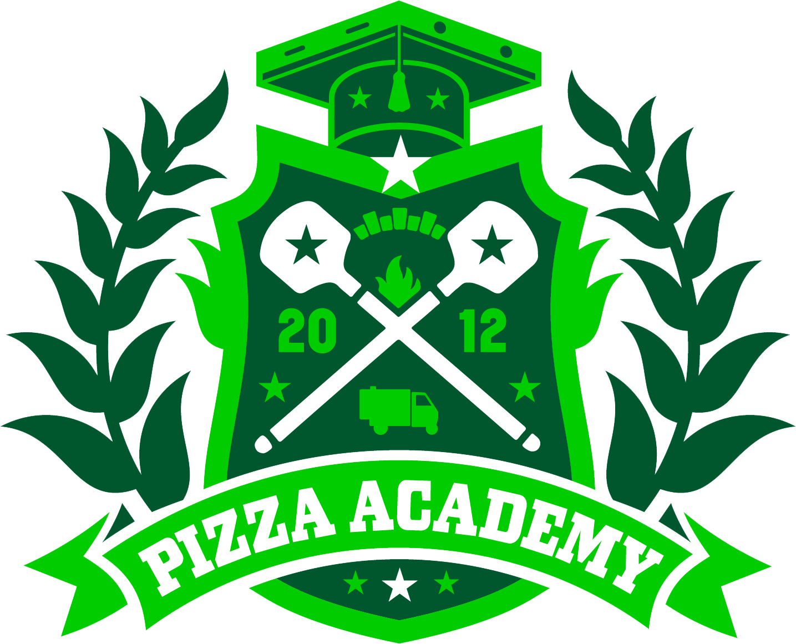

Ein Deep Dive ist eine detaillierte Stellenbeschreibung, die Zeile für Zeile alle Verantwortlichkeiten deiner Rolle erklärt. Du kannst sie jederzeit während deiner Laufbahn nutzen, um dein Wissen zu überprüfen und dich auf den nächsten Karriereschritt vorzubereiten.
Dieses Dokument kann als Momentaufnahme oder Arbeitsdokument genutzt werden. Drucke es aus, lies es durch und hake jede Zeile ab ✓ oder bewerte sie. Besprich gemeinsam mit deinem Vorgesetzten, welche Bereiche du bereits sicher beherrschst und welche du weiterentwickeln kannst.
Gesamtfortschritt: